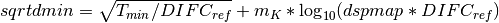
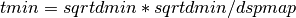

RemoveLowResTOF dialog.
Table of Contents
| Name | Direction | Type | Default | Description |
|---|---|---|---|---|
| InputWorkspace | Input | MatrixWorkspace | Mandatory | A workspace with x values in units of TOF and y values in counts |
| OutputWorkspace | Output | MatrixWorkspace | Mandatory | The name of the workspace to be created as the output of the algorithm |
| LowResTOFWorkspace | Output | MatrixWorkspace | The name of the optional output workspace that contains low resolution TOF which are removed from input workspace. | |
| ReferenceDIFC | Input | number | Optional | The DIFC value for the reference |
| K | Input | number | 3.22 | Some arbitrary number whose default is 3.22 for reasons that I don’t understand |
| Tmin | Input | number | Optional | The minimum time-of-flight of the frame (in microseconds). If not set the data range will be used. |
| MinWavelength | Input | number | Optional | The minimum wavelength for measurement. This overides all other parameters if specified. |
The low resolution time-of-flight cutoff is determined by one of two methods. The selection is made based on whether or not MinWavelength is specified.
If the minimum wavelength is specified, then the minimum time-of-flight for each pixel is calculated by converting the MinWavelength to time-of-flight using the standard equation found in ConvertUnits v1.
First is calculated the value of  . Then the value of
. Then the value of

If this is a negative number then the minimum time-of-flight is set to zero. Otherwise it is calculated as

Categories: AlgorithmIndex | Diffraction\Corrections
C++ source: RemoveLowResTOF.cpp (last modified: 2019-06-05)
C++ header: RemoveLowResTOF.h (last modified: 2018-10-05)
{kind=link}